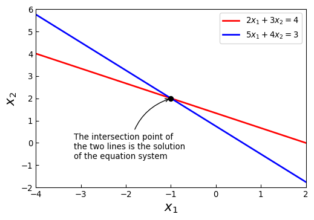
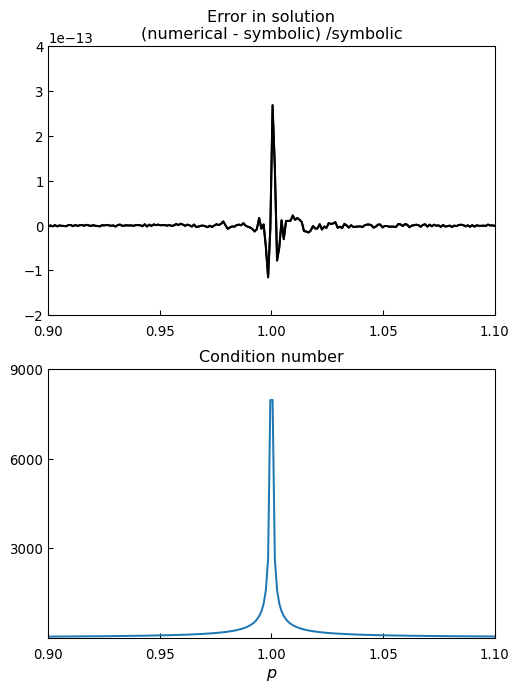
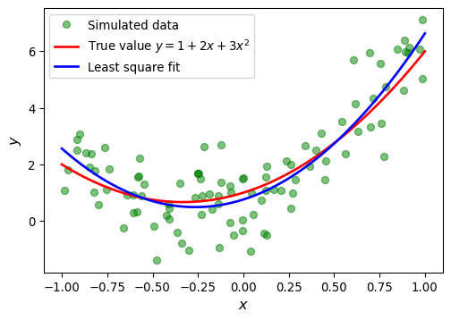
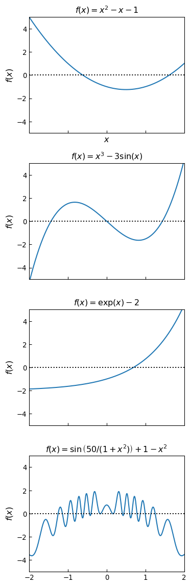
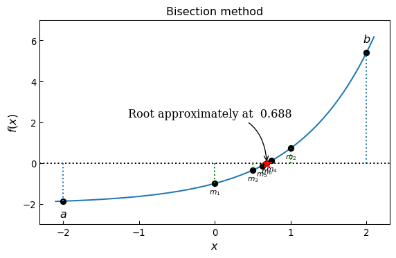
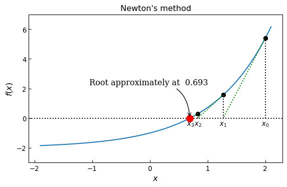
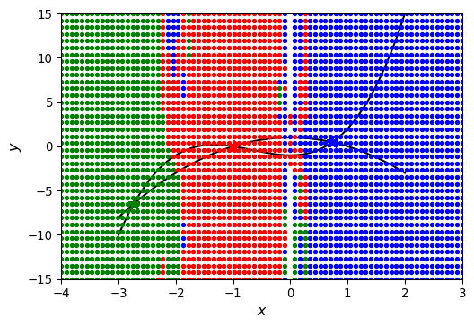

import numpy as np
import sympy
sympy.init_printing()
from scipy import linalg as la
from scipy import optimize
import matplotlib as mpl
import matplotlib.pyplot as pltAppendix D — Equation Solving
\(~\)
- In this appendix, we use
sympyfor solving equations symbolically, when possible, and use thelinalgmodule from thescipylibrary for numerically solving linear equation systems. For tackling nonlinear problems, we will use the root-finding functions in theoptimizemodule ofscipy
D.1 Importing modules
print('numpy: ', np.__version__)
print('sympy: ', sympy.__version__)
from scipy import __version__
print('scipy: ', __version__)
print('matplotlib: ', mpl.__version__)numpy: 2.3.1
sympy: 1.14.0
scipy: 1.16.0
matplotlib: 3.10.0D.2 System of Linear equations
\(~\)
\[ \begin{pmatrix} a_{11} & a_{12} & \cdots & a_{1n} \\ a_{21} & a_{22} & \cdots & a_{2n} \\ \vdots & \vdots & \ddots & \vdots \\ a_{m1} & a_{m2} & \cdots & a_{mn} \end{pmatrix} \begin{pmatrix} x_1\\ x_2\\ \vdots\\ x_n \end{pmatrix}= \begin{pmatrix} b_1\\ b_2\\ \vdots\\ b_m \end{pmatrix}\]
\[\text{or}\]
\[\text{simply}~\mathbf{A}\mathbf{x}=\mathbf{b}\]
\(~\)
D.2.1 Square system
\[ \begin{aligned} 2 x_1 + 3 x_2 &= 4\\ 5 x_1 + 4 x_2 &= 3 \end{aligned} \]
A = np.array([[2, 3], [5, 4]])
b = np.array([4, 3])
x = la.solve(A, b)
xarray([-1., 2.])x1 = np.linspace(-4, 2, 100)
x2_1 = (4 -2 *x1) /3
x2_2 = (3 -5 *x1) /4fig, ax = plt.subplots(figsize=(6, 4))
ax.plot(x1, x2_1, 'r', lw=2, label=r"$2x_1+3x_2=4$")
ax.plot(x1, x2_2, 'b', lw=2, label=r"$5x_1+4x_2=3$")
ax.plot(x[0], x[1], 'ko', lw=2)
ax.annotate("""The intersection point of
the two lines is the solution
of the equation system""",
xy=(x[0], x[1]),
xycoords='data',
xytext=(-120, -75),
textcoords='offset points',
arrowprops=dict(arrowstyle="->",
connectionstyle="arc3, rad=-0.3"))
ax.set_xlim([-4, 2])
ax.set_ylim([-2, 6])
ax.tick_params(which='both', direction='in')
ax.set_xlabel(r"$x_1$", fontsize=16)
ax.set_ylabel(r"$x_2$", fontsize=16)
ax.legend()
D.2.1.1 Symbolic approach
A = sympy.Matrix([[2, 3], [5, 4]])
b = sympy.Matrix([4, 3])A.condition_number()\(\displaystyle \frac{\sqrt{2 \sqrt{170} + 27}}{\sqrt{27 - 2 \sqrt{170}}}\)
sympy.N(_)\(\displaystyle 7.58240137440151\)
L, U, _ = A.LUdecomposition()L, U, L * U\(\displaystyle \left( \left[\begin{matrix}1 & 0\\\frac{5}{2} & 1\end{matrix}\right], \ \left[\begin{matrix}2 & 3\\0 & - \frac{7}{2}\end{matrix}\right], \ \left[\begin{matrix}2 & 3\\5 & 4\end{matrix}\right]\right)\)
x = A.solve(b); x # equivalent to A.LUsolve(b)\(\displaystyle \left[\begin{matrix}-1\\2\end{matrix}\right]\)
D.2.1.2 Numerical approach
A = np.array([[2, 3], [5, 4]])
b = np.array([4, 3])np.linalg.cond(A)\(\displaystyle 7.58240137440151\)
P, L, U = la.lu(A)P, L, U, P @ (L @ U)(array([[0., 1.],
[1., 0.]]),
array([[1. , 0. ],
[0.4, 1. ]]),
array([[5. , 4. ],
[0. , 1.4]]),
array([[2., 3.],
[5., 4.]]))la.solve(A, b)array([-1., 2.])The advantage of using
sympyis of course that we may obtain exact results and we can also include symbolic variables in the matrices. However, not all problems are solvable symbolically, or it may give exceedingly lengthy resultsThe advantage of using a numerical approach with
numpy/scipy, on the other hand, is that we are guaranteed to obtain a result, although it will be an approximate solution due to floating-point errorsSee the code below for an example that illustrates the differences between the symbolic and numerical approaches, and for an example that show the numerical approaches can be sensitive for equation systems with large condition numbers
In this example, we solve the equation system
\[ \begin{pmatrix} 1 & \sqrt{p}\\ 1 & \frac{1}{\sqrt{p}} \end{pmatrix} \begin{pmatrix} x_1 \\ x_2 \end{pmatrix}= \begin{pmatrix} 1 \\ 2 \end{pmatrix} \]
which for \(p=1\) is singular and for \(p\) in the vicinity of one is ill-conditioned
A comparison between this symbolic solution and the numerical solution is shown in Figure below. Here the errors in the numerical solution are due to numerical floating-point errors, and the numerical errors are significantly larger in the vicinity of \(p=1\), where the system has a large condition number. Also, if there are other sources of errors in either \(\mathbf{A}\) or \(\mathbf{b}\), the corresponding errors in \(\mathbf{x}\) can be even more severe
# Symbolic problem specification
p = sympy.symbols("p", positive=True)
A = sympy.Matrix([[1, sympy.sqrt(p)], [1, 1/sympy.sqrt(p)]])
b = sympy.Matrix([1, 2])
# Solve symbolically
x_sym_sol = A.solve(b)
x_sym_sol.simplify()
x_sym_sol\(\displaystyle \left[\begin{matrix}\frac{2 p - 1}{p - 1}\\- \frac{\sqrt{p}}{p - 1}\end{matrix}\right]\)
Acond = A.condition_number().simplify()
Acond\(\displaystyle \frac{\max\left(\frac{\sqrt{2} \sqrt{\left(p + 1\right)^{2} - \sqrt{p^{4} + 14 p^{2} + 1}}}{2 \sqrt{p}}, \frac{\sqrt{2} \sqrt{\left(p + 1\right)^{2} + \sqrt{p^{4} + 14 p^{2} + 1}}}{2 \sqrt{p}}\right)}{\min\left(\frac{\sqrt{2} \sqrt{\left(p + 1\right)^{2} - \sqrt{p^{4} + 14 p^{2} + 1}}}{2 \sqrt{p}}, \frac{\sqrt{2} \sqrt{\left(p + 1\right)^{2} + \sqrt{p^{4} + 14 p^{2} + 1}}}{2 \sqrt{p}}\right)}\)
# Function for solving numerically
AA = lambda p: np.array([[1, np.sqrt(p)], [1, 1/np.sqrt(p)]])
bb = np.array([1, 2])
x_num_sol = lambda p: np.linalg.solve(AA(p), bb)# Graph the difference between the symbolic (exact)
# and numerical results.
p_vec = np.linspace(0.9, 1.1, 200)
fig, axes = plt.subplots(2, 1, figsize=(6, 8))
for n in range(2):
x_sym = np.array([x_sym_sol[n].subs(p, pp).evalf()
for pp in p_vec])
x_num = np.array([x_num_sol(pp)[n] for pp in p_vec])
axes[0].plot(p_vec, (x_num - x_sym) /x_sym, 'k')
axes[0].set_title("Error in solution\n"
"(numerical - symbolic) /symbolic")
# axes[0].set_xlabel(r'$p$', fontsize=12)
axes[0].set_xlim([0.9, 1.1])
axes[0].set_ylim([-2.0e-13, 4.0e-13])
axes[0].tick_params(which='both', direction='in')
axes[0].tick_params(axis='x', pad=7)
axes[0].set_xticks(np.arange(0.9, 1.1, 0.05))
axes[1].plot(p_vec, [Acond.subs(p, pp).evalf()
for pp in p_vec])
axes[1].set_title("Condition number")
axes[1].set_xlabel(r'$p$', fontsize=12)
axes[1].set_xlim([0.9, 1.1])
axes[1].set_ylim([0, 9000])
axes[1].tick_params(which='both', direction='in')
axes[1].tick_params(axis='x', pad=7)
axes[1].set_xticks(np.arange(0.9, 1.1, 0.05))
axes[1].set_yticks([3000, 6000, 9000])
D.2.2 Rectangular system
D.2.2.1 Under-determined
Rectangular systems, with \(m \times n\), can be either under-determined or over-determined
Under-determined systems have more variables than equations, so the solution cannot be fully determined. Therefore, for such a system, the solution must be given in terms of the remaining free variables. This makes it difficult to treat this type of problem numerically, but a symbolic approach can often be used instead. For example, consider the underdetermined linear equation system
\[ \begin{pmatrix} 1 & 2 & 3\\ 4 & 5 & 6 \end{pmatrix} \begin{pmatrix} x_1 \\ x_2 \\ x_3 \end{pmatrix}= \begin{pmatrix} 7 \\ 8 \end{pmatrix} \]
x_vars = sympy.symbols("x_1, x_2, x_3")
x = sympy.Matrix(x_vars)
A = sympy.Matrix([[1, 2, 3], [4, 5, 6]])
b = sympy.Matrix([7, 8])
sympy.solve(A*x - b, x_vars)\(\displaystyle \left\{ x_{1} : x_{3} - \frac{19}{3}, \ x_{2} : \frac{20}{3} - 2 x_{3}\right\}\)
D.2.2.2 Over-determined: Least squares
It is often interesting to find an approximate solution to an over-determined system. An example of when this situation arises is data fitting: Say we have a model where a variable \(y\) is a quadratic polynomial in the variable \(x\), so that \(y = a_0 +a_1 x +a_2 x^2\), and that we would like to fit this model to experimental data
Here \(y\) is nonlinear in \(x\), but \(y\) is linear in the three unknown coefficients \(a_0\), \(a_1\) and \(a_2\), and this fact can be used to write the model as a linear equation system. If we collect data for \(m\) pairs \(\{ x_i, y_i \}_{i=1}^m\) of the variables \(x\) and \(y\), we can write the model as an \(m \times 3\) equation system:
\[ \begin{pmatrix} 1 & x_1 & x_1^2\\ \vdots & \vdots & \vdots \\ 1 & x_m & x_m^2 \end{pmatrix} \begin{pmatrix} a_0 \\[4pt] a_1 \\[4pt] a_3 \end{pmatrix}= \begin{pmatrix} y_1 \\ \vdots \\ y_m \end{pmatrix} \]
For \(m > 3\), there is in general no exact solution, and we need to introduce an approximate solution that give a best fit for the over-determined system
A natural definition of best fit for the over-determined system \(\mathbf{Ax} \approx \mathbf{b}\), is to minimize the sum of square error,
\[ \min_x \sum_{i=1}^m r_i^2 \]
where \(\mathbf{r} = \mathbf{b} -\mathbf{Ax}\) is the residual vector. This leads to the least square solution of the problem \(\mathbf{Ax} \approx \mathbf{b}\), which minimizes the distances between the data points
In
sympy, we can solve for the least square solution of an over-determined system using thesolve_least_squaresmethod, and for numerical problems we can use thescipyfunctionla.lstsq
np.random.seed(1234)
# define true model parameters
m = 100
x = np.linspace(-1, 1, m)
a, b, c = 1, 2, 3
y_exact = a +b*x +c*x**2
# simulate noisy data points
X = 1 -2*np.random.rand(m)
Y = a +b*X +c*X**2 +np.random.randn(m)
# fit the data to the model using linear least square
# see np.vander for alternative
A = np.vstack([X**0, X**1, X**2])
sol, r, rank, sv = la.lstsq(A.T, Y)
y_fit = sol[0] +sol[1] *x +sol[2] *x**2fig, ax = plt.subplots(figsize=(6, 4))
ax.plot(X, Y, 'go', alpha=0.5,
label='Simulated data')
ax.plot(x, y_exact, 'r', lw=2,
label='True value $y = 1 + 2x + 3x^2$')
ax.plot(x, y_fit, 'b', lw=2,
label='Least square fit')
ax.set_xlabel(r"$x$", fontsize=12)
ax.set_ylabel(r"$y$", fontsize=12)
ax.legend(loc=2)
# fit the data to the model using linear least square:
# 1st order polynomial
A = np.vstack([X**n for n in range(2)])
sol, r, rank, sv = la.lstsq(A.T, Y)
y_fit1 = sum([s*x**n for n, s in enumerate(sol)])
# 15th order polynomial
A = np.vstack([X**n for n in range(16)])
sol, r, rank, sv = la.lstsq(A.T, Y)
y_fit15 = sum([s*x**n for n, s in enumerate(sol)])fig, ax = plt.subplots(figsize=(6, 4))
ax.plot(X, Y, 'go', alpha=0.5,
label='Simulated data')
ax.plot(x, y_exact, 'r', lw=2,
label='True value $y = 1 + 2x + 3x^2$')
ax.plot(x, y_fit1, 'b', lw=2,
label='Least square fit [1st order]')
ax.plot(x, y_fit15, 'm', lw=2,
label='Least square fit [15th order]')
ax.set_xlabel(r"$x$", fontsize=12)
ax.set_ylabel(r"$y$", fontsize=12)
ax.legend(loc=2)D.3 Eigenvalue problems
eps, delta = sympy.symbols("epsilon, Delta")
H = sympy.Matrix([[eps, delta], [delta, -eps]])
H \(\displaystyle \left[\begin{matrix}\epsilon & \Delta\\\Delta & - \epsilon\end{matrix}\right]\)
H.eigenvals()\(\displaystyle \left\{ - \sqrt{\Delta^{2} + \epsilon^{2}} : 1, \ \sqrt{\Delta^{2} + \epsilon^{2}} : 1\right\}\)
H.eigenvects()[0]\(\displaystyle \left( - \sqrt{\Delta^{2} + \epsilon^{2}}, \ 1, \ \left[ \left[\begin{matrix}\frac{\epsilon}{\Delta} - \frac{\sqrt{\Delta^{2} + \epsilon^{2}}}{\Delta}\\1\end{matrix}\right]\right]\right)\)
H.eigenvects()[1]\(\displaystyle \left( \sqrt{\Delta^{2} + \epsilon^{2}}, \ 1, \ \left[ \left[\begin{matrix}\frac{\epsilon}{\Delta} + \frac{\sqrt{\Delta^{2} + \epsilon^{2}}}{\Delta}\\1\end{matrix}\right]\right]\right)\)
(_, _, evec1), (_, _, evec2) = H.eigenvects()sympy.simplify(evec1[0].T*evec2[0])\(\displaystyle \left[\begin{matrix}0\end{matrix}\right]\)
Obtaining analytical expressions for eigenvalues and eigenvectors using these methods is often very desirable indeed, but unfortunately it only works for small matrices
Thus, for larger systems we must resort to a fully numerical approach. For this, we can use the
la.eigvalsandla.eigfunctions in thescipylinear algebra packageMatrices that are either Hermitian or real symmetric have real-valued eigenvalues, and for such matrices, it is advantageous to instead use the functions
la.eigvalshandla.eigh, which guarantees that the eigenvalues returned by the function is stored in anumpyarray with real values
A = np.array([[1, 3, 5], [3, 5, 3], [5, 3, 9]])
Aarray([[1, 3, 5],
[3, 5, 3],
[5, 3, 9]])la.eigvals(A)array([13.35310908+0.j, -1.75902942+0.j, 3.40592034+0.j])evals, evecs = la.eig(A)evecsarray([[ 0.42663918, 0.90353276, -0.04009445],
[ 0.43751227, -0.24498225, -0.8651975 ],
[ 0.79155671, -0.35158534, 0.49982569]])la.eigvalsh(A)array([-1.75902942, 3.40592034, 13.35310908])evals, evecs = la.eigh(A)evecsarray([[ 0.90353276, -0.04009445, -0.42663918],
[-0.24498225, -0.8651975 , -0.43751227],
[-0.35158534, 0.49982569, -0.79155671]])D.4 Nonlinear equation
- A nonlinear equation can always be written on the form \(f(x)=0\), where \(f(x)\) is a nonlinear function and we seek the value of \(x\) (which can be a scalar or a vector) such that \(f(x)\) is zero. This \(x\) is called the root of \(f(x)=0\), and equation solving is therefore often referred to as root finding
D.4.1 Univariate equation
- In
sympy, we can solve many analytically solvable univariate and nonlinear equations using thesympy.solvefunction. For example,
x, a, b, c = sympy.symbols("x, a, b, c")sympy.solve(a + b*x + c*x**2, x)\(\displaystyle \left[ \frac{- b - \sqrt{- 4 a c + b^{2}}}{2 c}, \ \frac{- b + \sqrt{- 4 a c + b^{2}}}{2 c}\right]\)
sympy.solve(a*sympy.cos(x) - b*sympy.sin(x), x)\(\displaystyle \left[ - 2 \operatorname{atan}{\left(\frac{b - \sqrt{a^{2} + b^{2}}}{a} \right)}, \ - 2 \operatorname{atan}{\left(\frac{b + \sqrt{a^{2} + b^{2}}}{a} \right)}\right]\)
```{python}
sympy.solve(sympy.sin(x)-x, x)
```
NotImplementedError: multiple generators [x, sin(x)]
No algorithms are implemented to solve equation -x + sin(x)- In this type of situation, we need to resort to various numerical techniques. As a first step, it is often very useful to graph the function. This can give important clues about the number of solutions to the equation, and their approximate locations
x = np.linspace(-2, 2, 400)
# four examples of nonlinear functions
f1 = x**2 -x -1
f2 = x**3 -3*np.sin(x)
f3 = np.exp(x) -2
f4 = 1 -x**2 +np.sin(50 /(1 +x**2))# plot each function
fig, axes = plt.subplots(4, 1, figsize=(4, 12), sharex=True)
for n, f in enumerate([f1, f2, f3, f4]):
axes[n].plot(x, f, lw=1.5)
axes[n].axhline(0, ls=':', color='k')
axes[n].set_xlim(-2, 2)
axes[n].set_ylim(-5, 5)
axes[n].set_xticks([-2, -1, 0, 1, 2])
axes[n].tick_params(which='both', direction='in')
axes[n].set_ylabel(r'$f(x)$', fontsize=12)
axes[0].set_xlabel(r'$x$', fontsize=12)
titles = [r'$f(x) = x^2 -x -1$',
r'$f(x) = x^3 -3 \sin(x)$',
r'$f(x) = \exp(x) -2$',
r'$f(x) = \sin\left( 50/(1 +x^2) \right) +1 -x^2$']
for n, title in enumerate(titles):
axes[n].set_title(title)
fig.tight_layout()
D.4.2 Bisection method
# define a function, desired tolerance
# and starting interval [a, b]
x = np.linspace(-2.1, 2.1, 1000)
f = lambda x: np.exp(x) - 2
tol = 0.1
a, b = -2, 2# graph the function f
fig, ax = plt.subplots(1, 1, figsize=(6.8, 4))
ax.plot(x, f(x), lw=1.5)
ax.axhline(0, ls=':', color='k')
ax.set_xlabel(r'$x$', fontsize=12)
ax.set_ylabel(r'$f(x)$', fontsize=12)
ax.set_ylim(-3, 7)
ax.set_xticks([-2, -1, 0, 1, 2])
ax.tick_params(which='both', direction='in')
# find the root using the bisection method and visualize
# the steps in the method in the graph
fa, fb = f(a), f(b)
ax.plot(a, fa, 'ko'), ax.vlines(a, 0, fa, ls=':')
ax.plot(b, fb, 'ko'), ax.vlines(b, 0, fb, ls=':')
ax.text(a, fa - 0.8, r"$a$", ha='center', fontsize=12)
ax.text(b, fb + 0.5, r"$b$", ha='center', fontsize=12)
n = 1
while b - a > tol:
m = a + (b - a)/2
fm = f(m)
ax.plot(m, fm, 'ko')
ax.plot([m, m], [0, fm], color='g', ls=':')
ax.text(m, fm -0.5, rf"$m_{n}$", ha='center', fontsize=8)
n += 1
if np.sign(fa) == np.sign(fm):
a, fa = m, fm
else:
b, fb = m, fm
ax.plot(m, fm, 'r*', markersize=10)
ax.annotate(f"Root approximately at {m: .3f}",
fontsize=12,
family="serif",
xy=(a, fm),
xycoords='data',
xytext=(-150, +50),
textcoords='offset points',
arrowprops=dict(arrowstyle="->",
connectionstyle="arc3, rad=-.5"))
ax.set_title("Bisection method")
plt.show()
D.4.3 Newton’s method
s_x = sympy.symbols("x")
s_f = sympy.exp(s_x) -2
f = lambda x: sympy.lambdify(s_x, s_f, 'numpy')(x)
fp = lambda x: sympy.lambdify(s_x, sympy.diff(s_f, s_x), 'numpy')(x)
x = np.linspace(-1.9, 2.1, 1000)
# define a function, desired tolerance and starting point xk
tol = 0.01
xk = 2# setup a graph for visualizing the root finding steps
fig, ax = plt.subplots(1, 1, figsize=(6.8, 4))
ax.plot(x, f(x))
ax.axhline(0, ls=':', color='k')
ax.set_xticks([-2, -1, 0, 1, 2])
ax.set_ylim(-3, 7)
ax.set_xlabel(r'$x$', fontsize=12)
ax.set_ylabel(r'$f(x)$', fontsize=12)
ax.tick_params(which='both', direction='in')
# repeat Newton's method
# until convergence to the desired tolerance has been reached
n = 0
while f(xk) > tol:
xk_new = xk -f(xk) /fp(xk)
ax.plot([xk, xk], [0, f(xk)], color='k', ls=':')
ax.plot(xk, f(xk), 'ko')
ax.text(xk, -.5, rf'$x_{n}$', ha='center')
ax.plot([xk, xk_new], [f(xk), 0], 'g:')
xk = xk_new
n += 1
ax.plot(xk, f(xk), 'ro', markersize=10)
ax.annotate(f"Root approximately at {xk: .3f}",
fontsize=12,
family="serif",
xy=(xk, f(xk)),
xycoords='data',
xytext=(-150, +50),
textcoords='offset points',
arrowprops=dict(arrowstyle="->",
connectionstyle="arc3, rad=-.5"))
ax.set_title("Newton's method")
plt.show()
- The
scipy optimizemodule provides multiple functions for numerical root finding. Theoptimize.bisectandoptimize.newtonfunctions implement variants of bisection and Newton methods
f = lambda x: np.exp(x) -2optimize.bisect(f, -2, 2)\(\displaystyle 0.693147180560118\)
x_root_guess = 2
fprime = lambda x: np.exp(x)optimize.newton(f, x_root_guess)\(\displaystyle 0.693147180559946\)
optimize.newton(f, x_root_guess, fprime=fprime)\(\displaystyle 0.693147180559945\)
- The
scipyoptimizemodule provides additional functions for root finding. In particular, theoptimize.brentqandoptimize.brenthfunctions, which are variants of the bisection method, and also work on an interval where the function changes sign
optimize.brentq(f, -2, 2)\(\displaystyle 0.693147180559945\)
optimize.brenth(f, -2, 2)\(\displaystyle 0.693147180559938\)
optimize.ridder(f, -2, 2)\(\displaystyle 0.69314718055904\)
D.5 System of nonlinear equations
For example, consider the following system of two multivariate and nonlinear equations:
\[ \begin{aligned} y - x^3 -2x^2 +1 &= 0\\ y + x^2 -1 &= 0 \end{aligned} \]
def f(x):
return [x[1] -x[0]**3 -2*x[0]**2 +1, x[1] +x[0]**2 -1]optimize.fsolve(f, [1, 1])array([0.73205081, 0.46410162])optimize.broyden1(f, [1, 1])array([0.73205046, 0.46410254])optimize.broyden2(f, [1, 1])array([0.73205083, 0.4641017 ])x, y = sympy.symbols("x, y")
f_mat = sympy.Matrix([y - x**3 -2*x**2 + 1, y + x**2 - 1])
f_mat.jacobian(sympy.Matrix([x, y]))\(\displaystyle \left[\begin{matrix}- 3 x^{2} - 4 x & 1\\2 x & 1\end{matrix}\right]\)
def f_jacobian(x):
return [[-3*x[0]**2 - 4*x[0], 1], [2*x[0], 1]]optimize.fsolve(f, [1, 1], fprime=f_jacobian)array([0.73205081, 0.46410162])#def f(x):
# return [x[1] -x[0]**3 -2*x[0]**2 +1, x[1] +x[0]**2 -1]
x = np.linspace(-3, 2, 5000)
y1 = x**3 +2*x**2 -1
y2 = -x**2 +1
fig, ax = plt.subplots(figsize=(6, 4))
ax.plot(x, y1, 'b', lw=1.5, label=r'$y = x^3 +2x^2 -1$')
ax.plot(x, y2, 'g', lw=1.5, label=r'$y =-x^2 +1$')
x_guesses = [[-2, 2], [1, -1], [-2, -5]]
for x_guess in x_guesses:
sol = optimize.fsolve(f, x_guess)
ax.plot(sol[0], sol[1], 'r*', markersize=10)
ax.plot(x_guess[0], x_guess[1], 'ko')
ax.annotate("",
xy=(sol[0], sol[1]),
xytext=(x_guess[0], x_guess[1]),
arrowprops=dict(arrowstyle="->",
linewidth=1.5, linestyle=':'))
ax.legend(loc=0)
ax.set_xlabel(r'$x$', fontsize=12)
ax.set_ylabel(r'$y$', fontsize=12)
plt.show()import warnings
warnings.filterwarnings("error")
#def f(x):
# return [x[1] -x[0]**3 -2*x[0]**2 +1, x[1] +x[0]**2 -1]
fig, ax = plt.subplots(figsize=(6, 4))
ax.plot(x, y1, 'k', lw=1.5, label=r'$y = x^3 +2x^2 -1$')
ax.plot(x, y2, 'k', lw=1.5, label=r'$y = -x^2 +1$')
sol1 = optimize.fsolve(f, [-2, 2])
sol2 = optimize.fsolve(f, [ 1, -1])
sol3 = optimize.fsolve(f, [-2, -5])
colors = ['r', 'b', 'g']
for m in np.linspace(-4, 3, 80):
for n in np.linspace(-15, 15, 40):
x_guess = [m, n]
try:
sol = optimize.fsolve(f, x_guess)
for idx, s in enumerate([sol1, sol2, sol3]):
if abs(s -sol).max() < 1e-8:
ax.plot(sol[0], sol[1],
colors[idx]+'*', markersize=10)
ax.plot(x_guess[0], x_guess[1],
colors[idx]+'.')
except:
pass
ax.set_xlim(-4, 3)
ax.set_ylim(-15, 15)
ax.set_xlabel(r'$x$', fontsize=12)
ax.set_ylabel(r'$y$', fontsize=12)
plt.show()